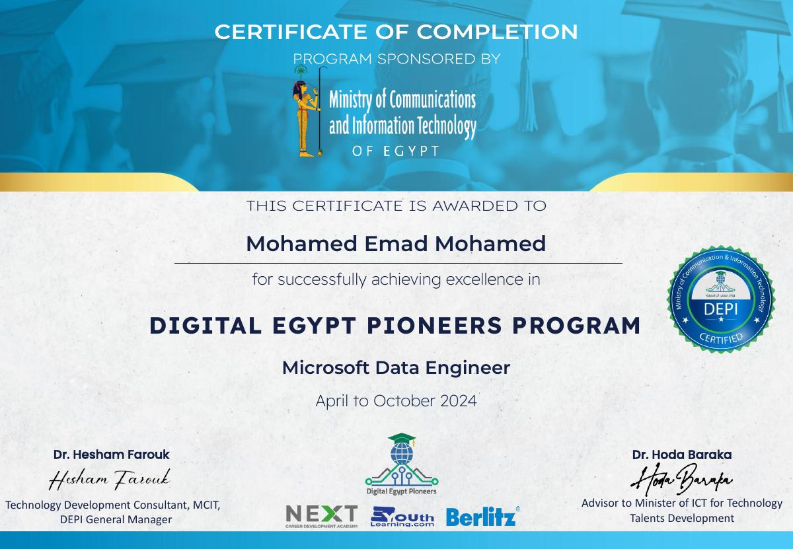
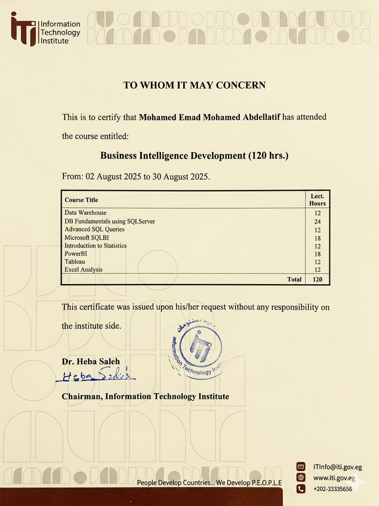
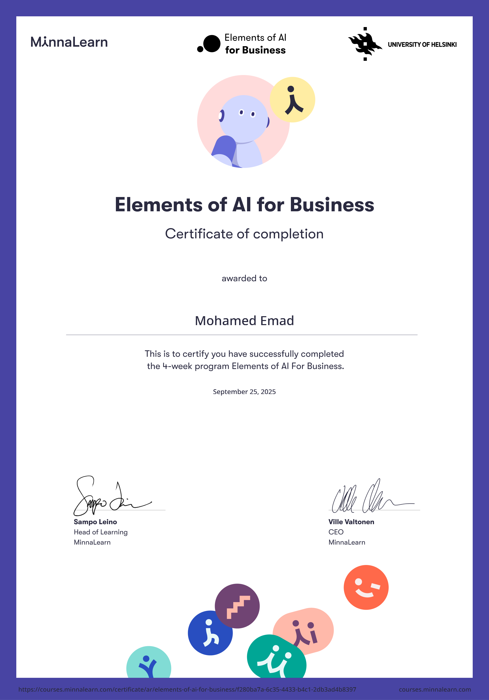
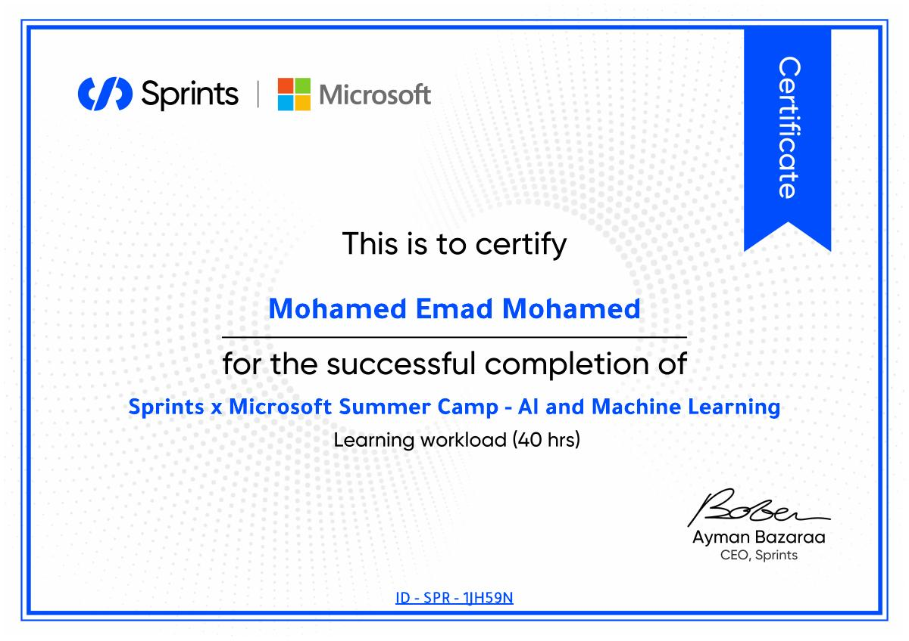
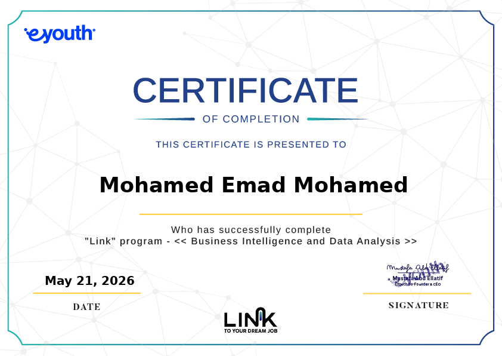
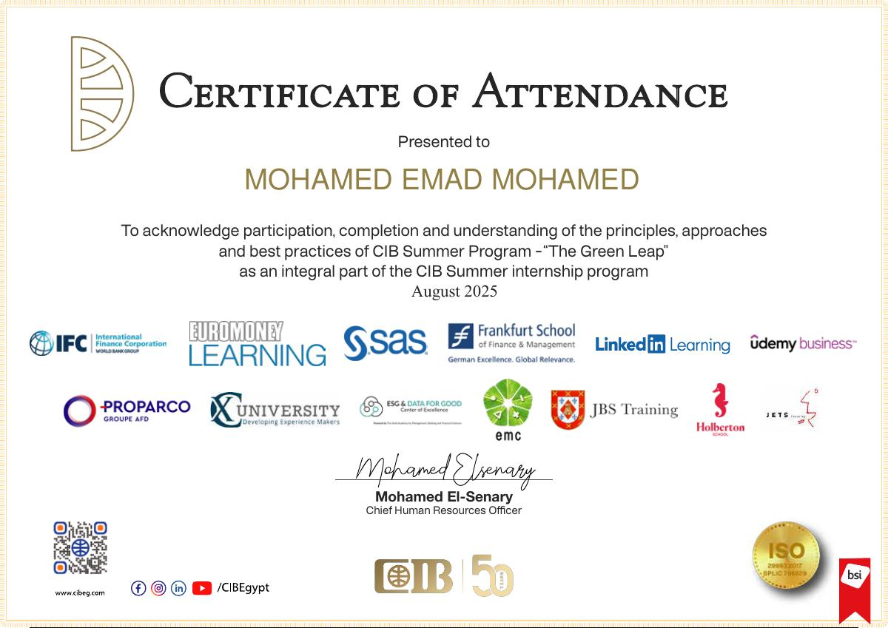

Data Engineering
Reliable ETL pipelines, data warehouses, and cloud-based data flows built for scale.
AzureSSISSQL
Available for data opportunities
Data Engineer & BI Developer working across the full data journey—from ingestion and warehousing to machine learning and dashboards people actually use.

I'm a final-year Computer Science student at Cairo University, specializing in Operations Research & Decision Support. My sweet spot is where robust engineering meets clear business thinking.
I build data pipelines, models, and visual stories that make complex systems easier to understand—and smarter to operate.
Start a conversation ↗Reliable ETL pipelines, data warehouses, and cloud-based data flows built for scale.
Decision-ready dashboards and reporting systems that put the signal ahead of the noise.
Practical machine learning workflows—from scraped data and feature work to deployed predictions.
Hands-on technical programs shaped around real tools, real constraints, and real business contexts.
Digital Egypt Pioneers Initiative
Built and optimized data pipelines across the Microsoft Azure ecosystem, working with Data Factory, Databricks, Synapse Analytics, Python, SQL, and modern MLOps tools.
Information Technology Institute
Completed an intensive 120-hour program spanning data warehousing, advanced SQL, statistics, Power BI, Tableau, and Excel analysis.
Commercial International Bank
Explored sustainability, ESG, banking, AI, data science, cybersecurity, and the connection between responsible growth and technology.
A featured project that brings web extraction, warehousing, modeling, deployment, and visualization into one coherent product.
FEATURED CASE STUDY · 2024
A machine learning application that predicts laptop prices from hardware specifications. Product data is collected from online retailers, prepared through an SSIS warehouse, modeled in Python, served with Flask, and explored in Power BI.
Nine focused programs across data engineering, BI, artificial intelligence, Python, product, sustainability, and business.

Azure data services, warehousing, pipelines & MLOps

120 hours · SQL, Power BI, Tableau, data warehouse

Four-week applied AI program for business

40-hour Microsoft Summer Camp workload

Business intelligence and data analysis program

Sustainability, ESG, banking, data & technology